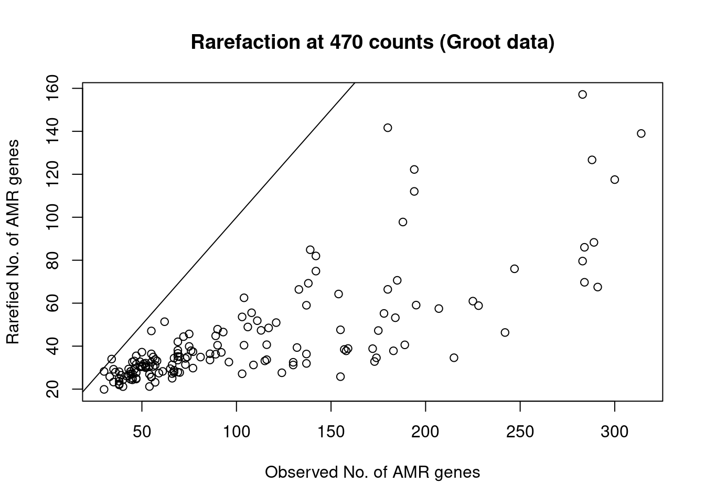
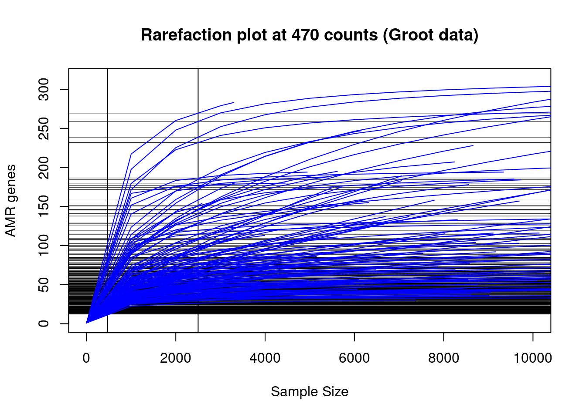

Last updated: 2022-09-03
Checks: 7 0
Knit directory: 2022_Rubio_MetaHIV/
This reproducible R Markdown analysis was created with workflowr (version 1.7.0). The Checks tab describes the reproducibility checks that were applied when the results were created. The Past versions tab lists the development history.
Great! Since the R Markdown file has been committed to the Git repository, you know the exact version of the code that produced these results.
Great job! The global environment was empty. Objects defined in the global environment can affect the analysis in your R Markdown file in unknown ways. For reproduciblity it’s best to always run the code in an empty environment.
The command set.seed(20220202) was run prior to running the code in the R Markdown file. Setting a seed ensures that any results that rely on randomness, e.g. subsampling or permutations, are reproducible.
Great job! Recording the operating system, R version, and package versions is critical for reproducibility.
Nice! There were no cached chunks for this analysis, so you can be confident that you successfully produced the results during this run.
Great job! Using relative paths to the files within your workflowr project makes it easier to run your code on other machines.
Great! You are using Git for version control. Tracking code development and connecting the code version to the results is critical for reproducibility.
The results in this page were generated with repository version ef31c92. See the Past versions tab to see a history of the changes made to the R Markdown and HTML files.
Note that you need to be careful to ensure that all relevant files for the analysis have been committed to Git prior to generating the results (you can use wflow_publish or wflow_git_commit). workflowr only checks the R Markdown file, but you know if there are other scripts or data files that it depends on. Below is the status of the Git repository when the results were generated:
Ignored files:
Ignored: .Rhistory
Ignored: .Rproj.user/
Ignored: output/aribaData/
Ignored: output/grootData/
Untracked files:
Untracked: analysis/06_2_biplot_envfit.Rmd
Unstaged changes:
Modified: analysis/03_1_procruster.Rmd
Modified: analysis/06_biplot.Rmd
Modified: analysis/_site.yml
Modified: analysis/index.Rmd
Note that any generated files, e.g. HTML, png, CSS, etc., are not included in this status report because it is ok for generated content to have uncommitted changes.
These are the previous versions of the repository in which changes were made to the R Markdown (analysis/03_rarefaction.Rmd) and HTML (docs/03_rarefaction.html) files. If you’ve configured a remote Git repository (see ?wflow_git_remote), click on the hyperlinks in the table below to view the files as they were in that past version.
| File | Version | Author | Date | Message |
|---|---|---|---|---|
| html | ef31c92 | Elisa | 2022-08-31 | procruster analysis |
| Rmd | e68f214 | Elisa | 2022-08-30 | heatmap_test |
| Rmd | 95466a8 | Elisa | 2022-08-21 | Alpha diversity correlations with CD4 and pairwise comparison for betadiversity and riskgroup2 |
| html | 95466a8 | Elisa | 2022-08-21 | Alpha diversity correlations with CD4 and pairwise comparison for betadiversity and riskgroup2 |
library(tidyverse)
library(glue)
library(vegan)
library(patchwork)load("output/summarized_ariba.RDA")
load("output/summarized_groot.RDA")S <- specnumber(t(ariba_counts[ ,-1])) # observed number of AMR genes
raremax <- min(rowSums(t(ariba_counts[ ,-1])))
Srare <- rarefy(t(ariba_counts[ ,-1]), raremax)
plot(S, Srare, xlab = "Observed No. of AMR genes", ylab = "Rarefied No. of AMR genes", main=glue("Rarefaction at {raremax} counts (Ariba data)"))
abline(0, 1)
| Version | Author | Date |
|---|---|---|
| 95466a8 | Elisa | 2022-08-21 |
rarecurve(t(ariba_counts[ ,-1]), step = 1000, sample = raremax, col = "blue", cex = 0.6, ylab = "AMR genes", main=glue("Rarefaction plot at {raremax} counts (Ariba data)"))
| Version | Author | Date |
|---|---|---|
| 95466a8 | Elisa | 2022-08-21 |
All samples arrive to the plateau at 1.5176^{4} AMR genes. We analyze the number of reads per sample distribution:
nCounts_ariba<-apply(ariba_counts[ ,-1], 2, sum)%>%as.data.frame()%>%rename(counts=1)
ggplot(nCounts_ariba, aes(counts)) +
coord_cartesian(xlim = c(0,NA))+
geom_freqpoly()+
labs(title = "Counts of AMR genes per sample distribution (Ariba data)")+
scale_x_continuous(breaks=seq(0,150000,10000))+
theme_bw()+
theme(axis.title = element_blank())
| Version | Author | Date |
|---|---|---|
| 95466a8 | Elisa | 2022-08-21 |
We obtain the rarefied data, remove AMR genes with 0 values and save it:
set.seed(200889)
ariba_rar<-rrarefy(t(ariba_counts[ ,-1]), sample = raremax)
ariba_rar<-as_tibble(t(ariba_rar))%>%mutate(ref_name=ariba_counts$ref_name)%>%
select(ref_name, everything())%>%
rowwise()%>%
filter(sum(c_across(-ref_name))>0)%>%ungroup()
save(ariba_rar, file="output/rarefied_ariba.RDA")ariba_counts%>%rowwise()%>%
filter(sum(c_across(-ref_name))>0)%>%ungroup()# A tibble: 308 × 156
ref_name Sample_001 Sample_002 Sample_003 Sample_004 Sample_005 Sample_006
<chr> <dbl> <dbl> <dbl> <dbl> <dbl> <dbl>
1 APH_3___II… 48 34 82 28 696 70
2 CblA_1.300… 82 542 152 0 0 0
3 CfxA2.3003… 1088 1642 1322 0 0 0
4 CfxA6.3003… 170 0 3640 1806 1514 1844
5 Clostridio… 2664 2562 3478 2780 3930 2604
6 ErmB.30003… 176 30 128 250 240 438
7 ErmF.30004… 698 86 3308 1830 2044 1302
8 ErmG.30005… 46 480 26 124 120 432
9 Mef_En2_.3… 292 384 780 60 0 26
10 Moraxella_… 888 2116 1174 462 0 0
# … with 298 more rows, and 149 more variables: Sample_009 <dbl>,
# Sample_010 <dbl>, Sample_011 <dbl>, Sample_012 <dbl>, Sample_013 <dbl>,
# Sample_014 <dbl>, Sample_015 <dbl>, Sample_016 <dbl>, Sample_017 <dbl>,
# Sample_018 <dbl>, Sample_019 <dbl>, Sample_020 <dbl>, Sample_021 <dbl>,
# Sample_022 <dbl>, Sample_023 <dbl>, Sample_024 <dbl>, Sample_025 <dbl>,
# Sample_026 <dbl>, Sample_027 <dbl>, Sample_028 <dbl>, Sample_029 <dbl>,
# Sample_030 <dbl>, Sample_031 <dbl>, Sample_032 <dbl>, Sample_033 <dbl>, …Rarefaction at the minimum counts per sample:
S <- specnumber(t(groot_counts[ ,-1])) # observed number of AMR genes
raremax <- min(rowSums(t(groot_counts[ ,-1])))
Srare <- rarefy(t(groot_counts[ ,-1]), raremax) # observed number of rarefied AMR genes
plot(S, Srare, xlab = "Observed No. of AMR genes", ylab = "Rarefied No. of AMR genes", main=glue("Rarefaction at {raremax} counts (Groot data)"))
abline(0, 1)
We loose a lot of AMR genes if we rarefy at 470counts.
rarecurve(t(groot_counts[ ,-1]), step = 1000, sample = raremax, col = "blue", cex = 0.6, ylab = "AMR genes", label = FALSE, xlim=c(0,10000), main=glue("Rarefaction plot at {raremax} counts (Groot data)"))
Samples have not arrived to the plateau at this rarefaction level.
We analyze the rarefaction curves at different counts as well as the total counts of AMR genes per sample distribution and the number of samples that we would loose if we rarefied at these counts:
nrar=2500
Srare <- rarefy(t(groot_counts[ ,-1]), nrar) # observed number of rarefied AMR genes
plot(S, Srare, xlab = "Observed No. of AMR genes", ylab = "Rarefied No. of AMR genes", main=glue("Rarefaction at {nrar} counts (Groot data)"))
abline(0, 1)
rarecurve(t(groot_counts[ ,-1]), step = 1000, sample = nrar, col = "blue", cex = 0.6, ylab = "AMR genes", label = FALSE, xlim=c(0,10000), main=glue("Rarefaction plot at {nrar} counts (Groot data)"))
| Version | Author | Date |
|---|---|---|
| ef31c92 | Elisa | 2022-08-31 |
nCounts_groot<-groot_counts%>%pivot_longer(-ref_name, names_to = "sample", values_to = "count")%>%
group_by(sample)%>%
summarise(ncount=sum(count))
ggplot(nCounts_groot, aes(ncount))+
geom_freqpoly(binwidth=1000)+
geom_vline(xintercept = nrar, color="red")+
scale_x_continuous(breaks = c(seq(from=0, to=10000, by=5000), 20000, 40000, 60000))+
geom_label(
label=glue("{sum(nCounts_groot$ncount<nrar)} ({round(sum(nCounts_groot$ncount<nrar)*100/nrow(nCounts_groot),1)}%) samples have less than {nrar} counts"),
x=40000,y=10)+
theme_bw()+
labs(title = "Counts of AMR genes per sample distribution (Groot data)")
| Version | Author | Date |
|---|---|---|
| ef31c92 | Elisa | 2022-08-31 |
We rarefy groot samples at 2500 counts (we exlcude those samples with less than 2500 counts and AMR genes not present in any sample after the filtering)
groot_counts_filt<-groot_counts%>%pivot_longer(-ref_name, names_to = "sample", values_to = "count")%>%
group_by(sample)%>%
filter(sum(count)>2500)%>%ungroup()%>%
pivot_wider(names_from = "sample", values_from = "count")%>%
rowwise()%>%
filter(sum(c_across(-ref_name))>0)%>%ungroup()
set.seed(200889)
groot_rar<-rrarefy(t(groot_counts_filt[ ,-1]), sample = nrar)
groot_rar<-as_tibble(t(groot_rar))%>%mutate(ref_name=groot_counts_filt$ref_name)%>%
select(ref_name, everything())
save(groot_rar, file=glue("output/rarefied{nrar}_groot.RDA"))
sessionInfo()R version 4.1.2 (2021-11-01)
Platform: x86_64-pc-linux-gnu (64-bit)
Running under: Ubuntu 20.04.3 LTS
Matrix products: default
BLAS: /usr/lib/x86_64-linux-gnu/blas/libblas.so.3.9.0
LAPACK: /usr/lib/x86_64-linux-gnu/lapack/liblapack.so.3.9.0
locale:
[1] LC_CTYPE=es_ES.UTF-8 LC_NUMERIC=C
[3] LC_TIME=es_ES.UTF-8 LC_COLLATE=es_ES.UTF-8
[5] LC_MONETARY=es_ES.UTF-8 LC_MESSAGES=es_ES.UTF-8
[7] LC_PAPER=es_ES.UTF-8 LC_NAME=C
[9] LC_ADDRESS=C LC_TELEPHONE=C
[11] LC_MEASUREMENT=es_ES.UTF-8 LC_IDENTIFICATION=C
attached base packages:
[1] stats graphics grDevices utils datasets methods base
other attached packages:
[1] patchwork_1.1.1 vegan_2.5-7 lattice_0.20-45 permute_0.9-7
[5] glue_1.6.2 forcats_0.5.1 stringr_1.4.0 dplyr_1.0.8
[9] purrr_0.3.4 readr_2.1.2 tidyr_1.2.0 tibble_3.1.6
[13] ggplot2_3.3.5 tidyverse_1.3.1 workflowr_1.7.0
loaded via a namespace (and not attached):
[1] httr_1.4.2 sass_0.4.1 jsonlite_1.8.0 splines_4.1.2
[5] modelr_0.1.8 bslib_0.3.1 assertthat_0.2.1 getPass_0.2-2
[9] highr_0.9 cellranger_1.1.0 yaml_2.3.5 pillar_1.7.0
[13] backports_1.4.1 digest_0.6.29 promises_1.2.0.1 rvest_1.0.2
[17] colorspace_2.0-3 htmltools_0.5.2 httpuv_1.6.5 Matrix_1.4-0
[21] pkgconfig_2.0.3 broom_0.7.12 haven_2.4.3 scales_1.1.1
[25] processx_3.5.3 whisker_0.4 later_1.3.0 tzdb_0.2.0
[29] git2r_0.30.1 mgcv_1.8-38 farver_2.1.0 generics_0.1.2
[33] ellipsis_0.3.2 withr_2.5.0 cli_3.2.0 magrittr_2.0.2
[37] crayon_1.5.1 readxl_1.3.1 evaluate_0.15 ps_1.6.0
[41] fs_1.5.2 fansi_1.0.3 nlme_3.1-157 MASS_7.3-56
[45] xml2_1.3.3 tools_4.1.2 hms_1.1.1 lifecycle_1.0.1
[49] munsell_0.5.0 reprex_2.0.1 cluster_2.1.2 callr_3.7.0
[53] compiler_4.1.2 jquerylib_0.1.4 rlang_1.0.2 grid_4.1.2
[57] rstudioapi_0.13 labeling_0.4.2 rmarkdown_2.13 gtable_0.3.0
[61] DBI_1.1.2 R6_2.5.1 lubridate_1.8.0 knitr_1.38
[65] fastmap_1.1.0 utf8_1.2.2 rprojroot_2.0.2 stringi_1.7.6
[69] parallel_4.1.2 Rcpp_1.0.8.3 vctrs_0.3.8 dbplyr_2.1.1
[73] tidyselect_1.1.2 xfun_0.30